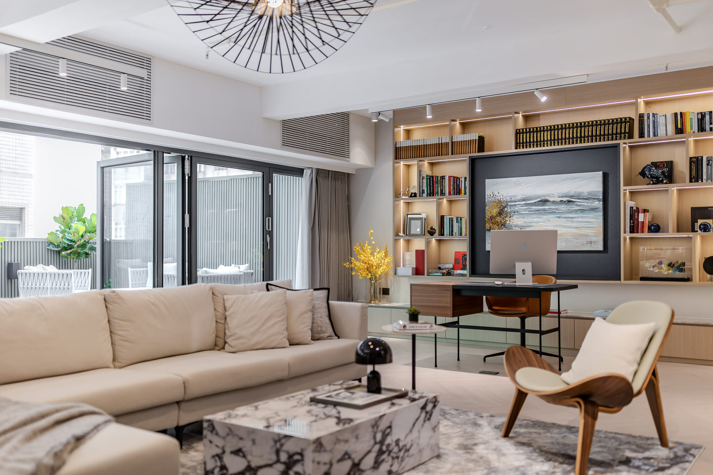
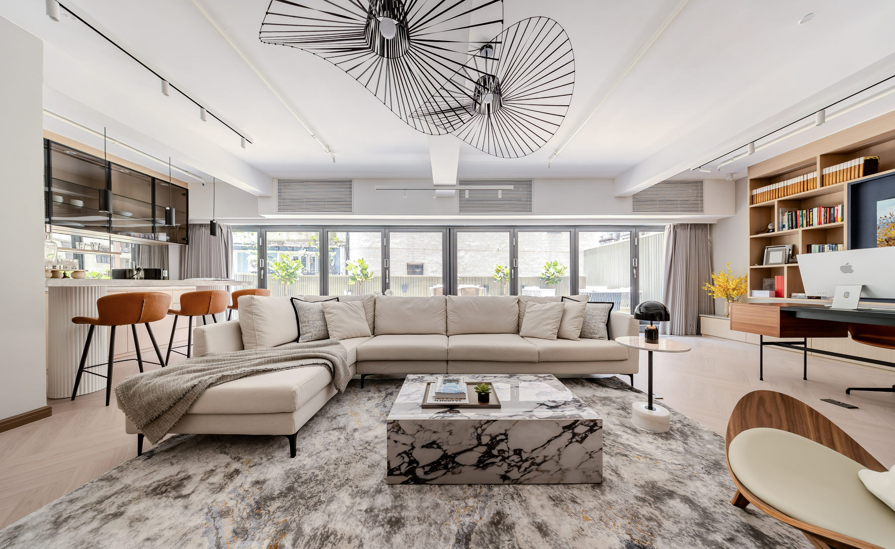
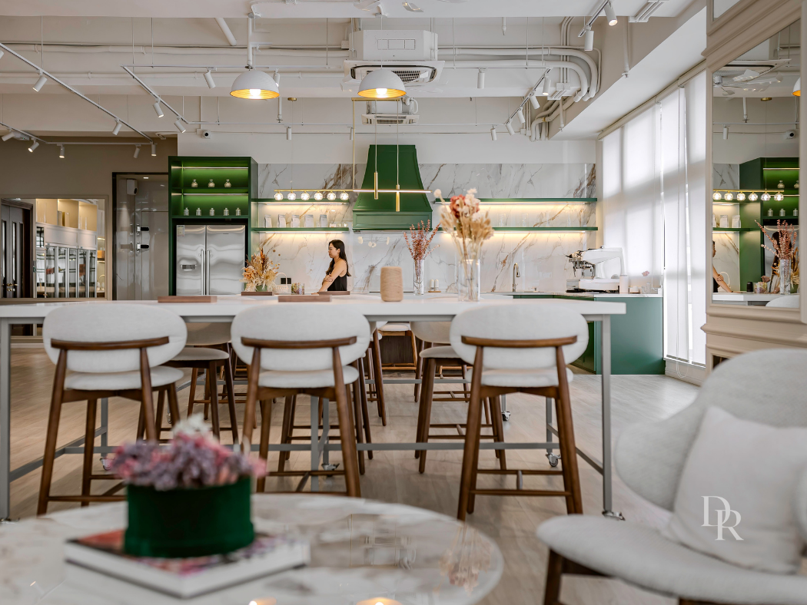
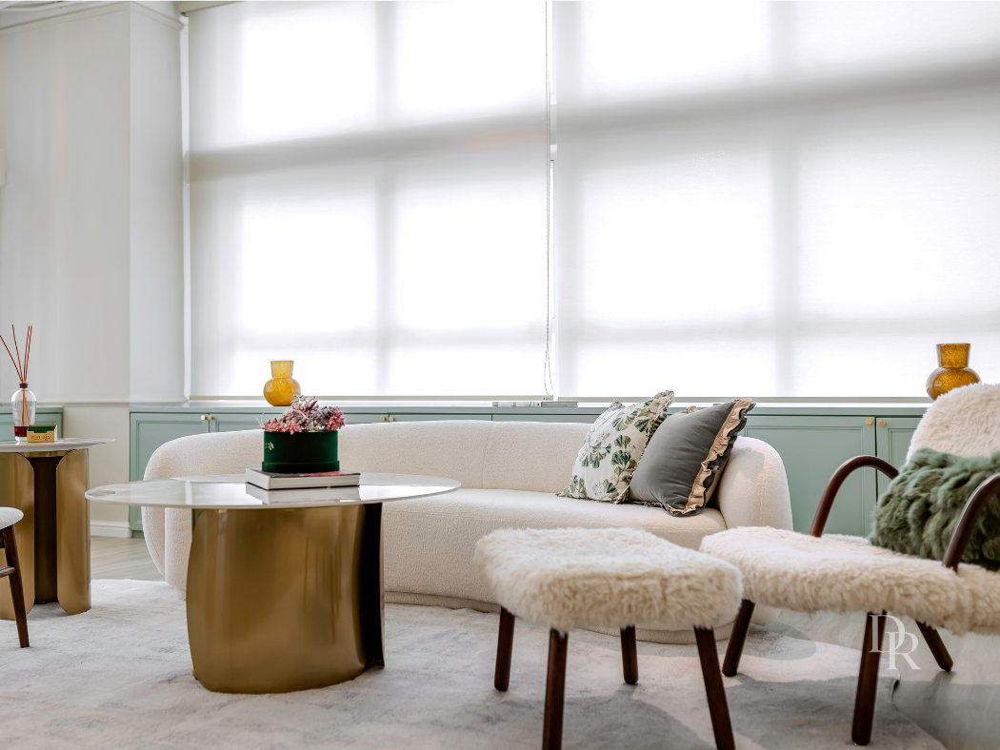

RESIDENTIAL · HONG KONG
Quietly considered
A warm, composed home built around natural textures and calm living.
Selected work · Hong Kong
A selection of homes and places shaped around the people who use them.
Every project begins with listening. We look for the character in a space, then bring function, materials and details together around the client’s everyday life.

A warm, composed home built around natural textures and calm living.

A welcoming dining space for everyday meals and shared celebrations.

Timeless forms and thoughtful details meet contemporary comfort.

Soft tones and tactile materials bring an easy rhythm to the home.

Furniture and lighting selected to fit the way the owners live.

Layered objects, art and textiles bring depth and personality.
Have a space in mind?